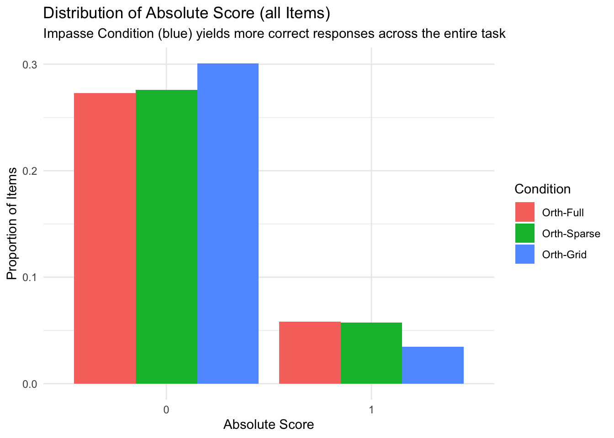
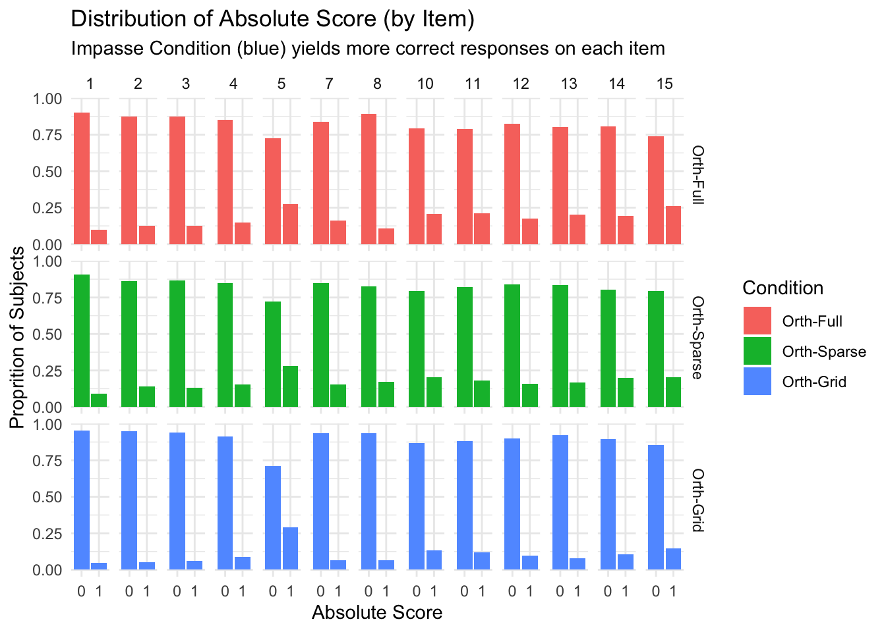
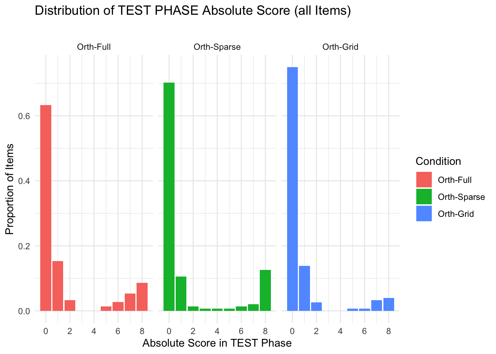
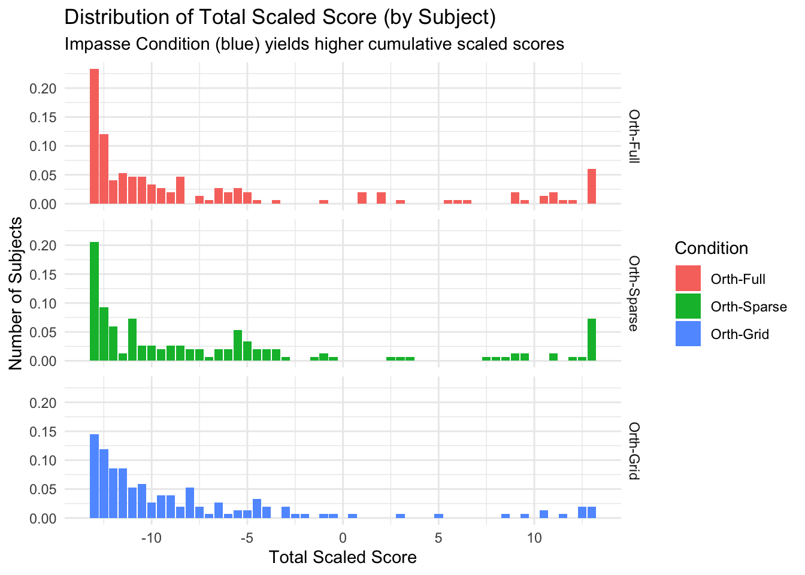
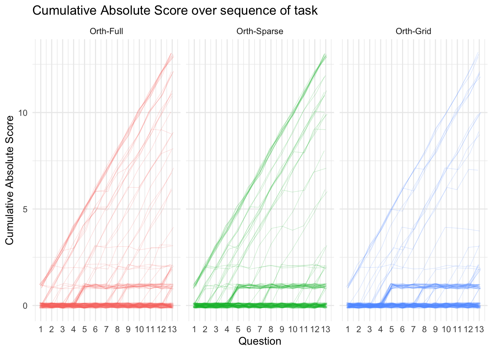

CODE
options(scipen=1, digits=3)
library(kableExtra) #printing tables
library(ggformula) #quick graphs
library(pbapply) #progress bar and time estimate for *apply fns
library(Hmisc) # %nin% operator
library(tidyverse) #ALL THE THINGSStudy SGC4A | 2 Response Scoring
TODO update graph subtitles - recode pretty_condition and pretty_interpretation in intro
The purpose of this notebook is to score (assign a measure of accuracy) to response data for the SGC4A study. This is required because the question type on the graph comprehension task used a ‘Multiple Response’ (MR) question design. Here, we evaluate different approaches to scoring multiple response questions, and transform raw item responses (e.g. boxes ABC are checked) to a measure of response accuracy. (Warning: this notebook takes several minutes to execute.) To review the strategy behind Multiple Response scoring for the SGC project, refer to section Section sec-scoring.
options(scipen=1, digits=3)
library(kableExtra) #printing tables
library(ggformula) #quick graphs
library(pbapply) #progress bar and time estimate for *apply fns
library(Hmisc) # %nin% operator
library(tidyverse) #ALL THE THINGSTo review the strategy behind Multiple Response scoring for the SGC project, refer to section Section sec-scoring.
In SGC_4 we are fundamentally interested in understanding how a participant interprets the presented graph (stimulus). The graph comprehension task asks them to select the data points in the graph that meet the criteria posed in the question. To assess a participant’s performance, for each question (q=15) we will calculate the following scores:
An overall, strict score:
1. Absolute Score : using dichotomous scoring referencing true (Triangular) answer. (see 1.2)
Sub-scores, for each alternative graph interpretation
2. Triangular Score : using partial scoring [-1/q, +1/p] referencing true (Triangular) answer key.
3. Orthogonal Score : using partial scoring [-1/q, +1/p] referencing (incorrect Orthogonal) answer key.
4. Tversky Score : using partial scoring [-1/q, +1/p] referencing (incorrect connecting-lines strategy) answer key. 5. Satisficing Score : using partial scoring [-1/q, +1/p] referencing (incorrect satisficing strategy) answer key.
We start by importing answer keys.
# HACK WD FOR LOCAL RUNNING?
# imac = "/Users/amyraefox/Code/SGC-Scaffolding_Graph_Comprehension/SGC-X/ANALYSIS/MAIN"
# mbp = "/Users/amyfox/Sites/RESEARCH/SGC-Scaffolding_Graph_Comprehension/SGC-X/ANALYSIS/MAIN"
# setwd(imac)
#SAVE KEYS FOR FUTURE USE
keys_raw <- read_csv("analysis/utils/keys/parsed_keys/keys_raw")
keys_orth <- read_csv("analysis/utils/keys/parsed_keys/keys_orth")
keys_tri <- read_csv("analysis/utils/keys/parsed_keys/keys_tri")
keys_satisfice_left <- read_csv("analysis/utils/keys/parsed_keys/keys_satisfice_left")
keys_satisfice_right <- read_csv("analysis/utils/keys/parsed_keys/keys_satisfice_right")
keys_tversky_duration <- read_csv("analysis/utils/keys/parsed_keys/keys_tversky_duration")
keys_tversky_end <- read_csv("analysis/utils/keys/parsed_keys/keys_tversky_end")
keys_tversky_max <- read_csv("analysis/utils/keys/parsed_keys/keys_tversky_max")
keys_tversky_start <- read_csv("analysis/utils/keys/parsed_keys/keys_tversky_start")Next, we import the item-level response data. For each row in the item level dataset (indicating the response to a single question-item for a single subject), we compare the raw response df_items$response with the answer keys in each interpretation (e.g. keys_orth, keys_tri, etc…), then using those sets, determine the number of correctly selected items(p) and incorrectly selected items (q), which in turn are used to calculate partial[-1/q, +1/p] scores for each interpretation. The resulting scores are then stored on each item in df_items, and can be used to determine which graph interpretation the subject held.
Specifically, the following scores are calculated for each item:
Interpretation Subscores
score_TRI How consistent is the response with the triangularinterpretation?score_ORTH How consistent is the response with the orthogonalinterpretation?score_SATISFICE is calculated by taking the maximum value of :
score_SAT_left How consistent is the response with the (left side) Satisficing interpretation?score_SAT_right How consistent is the response with the (right side) Satisficing interpretationscore_TVERSKY is calculated by taking the maximum value of:
score_TV_max How consistent is the response with the (maximal) Tversky interpretation?score_TV_start How consistent is the response with the (start-time) Tversky interpretation?score_TV_end How consistent is the response with the (end-time) Tversky interpretation?score_TV_duration How consistent is the response with the (duration) Tversky interpretation?score_REF Did the response select only the reference point?score_BOTH How consistent is the response with both the orthogonal and triangular interpretations?Absolute Scores
score_ABS Is the response strictly correct? (triangular interpretation)score_niceABS Is the response strictly correct? (triangular interpretation, not penalizing ref points). This is a more generous version of the Absolute score that does not penalize the participant if in addition to the correct answer in addition to they also select the data point referenced in the question.# HACK WD FOR LOCAL RUNNING?
# imac = "/Users/amyraefox/Code/SGC-Scaffolding_Graph_Comprehension/SGC-X/ANALYSIS/MAIN"
# mbp = "/Users/amyfox/Sites/RESEARCH/SGC-Scaffolding_Graph_Comprehension/SGC-X/ANALYSIS/MAIN"
# setwd(imac)
#backup <- read_rds('analysis/SGC4A/data/1-study-level/sgc4a_items.rds') #for troubleshooting only
df_items <- read_rds('analysis/SGC4A/data/1-study-level/sgc4a_items.rds')# HACK WD FOR LOCAL RUNNING?
# imac = "/Users/amyraefox/Code/SGC-Scaffolding_Graph_Comprehension/SGC-X/ANALYSIS/MAIN"
# mbp = "/Users/amyfox/Sites/RESEARCH/SGC-Scaffolding_Graph_Comprehension/SGC-X/ANALYSIS/MAIN"
# setwd(imac)
source("analysis/utils/scoring.R")note: this cell takes approximately 30 minutes to run on the full df_items dataframe with 4950 records
#RUN THIS <OR> THE CALCULATE-SCORES-FORLOOP [not both]
#ALPHEBETIZE RESPONSE
df_items$response = pbmapply(reorder_inplace, df_items$response)
#STRATEGY PARTIAL-SUBSCORES
df_items$score_TRI = pbmapply(calc_subscore, df_items$q, df_items$condition, df_items$response, MoreArgs = list(keyframe = keys_tri))
df_items$score_ORTH = pbmapply(calc_subscore, df_items$q, df_items$condition, df_items$response, MoreArgs = list(keyframe = keys_orth))
df_items$score_SAT_left = pbmapply(calc_subscore, df_items$q, df_items$condition, df_items$response, MoreArgs = list(keyframe = keys_satisfice_left))
df_items$score_SAT_right = pbmapply(calc_subscore, df_items$q, df_items$condition, df_items$response, MoreArgs = list(keyframe = keys_satisfice_right))
df_items$score_TV_max = pbmapply(calc_subscore, df_items$q, df_items$condition, df_items$response, MoreArgs = list(keyframe = keys_tversky_max))
df_items$score_TV_start = pbmapply(calc_subscore, df_items$q, df_items$condition, df_items$response, MoreArgs = list(keyframe = keys_tversky_start))
df_items$score_TV_end = pbmapply(calc_subscore, df_items$q, df_items$condition, df_items$response, MoreArgs = list(keyframe = keys_tversky_end))
df_items$score_TV_duration = pbmapply(calc_subscore, df_items$q, df_items$condition, df_items$response, MoreArgs = list(keyframe = keys_tversky_duration))
#SPECIAL ABSOLUTE SUBSCORES
df_items$score_REF = pbmapply(calc_refscore, df_items$q, df_items$response)
df_items$score_BOTH = as.integer((df_items$score_TRI == 1) & (df_items$score_ORTH ==1))
#ABSOLUTE SCORES
df_items$score_ABS = as.integer(df_items$correct)
df_items$score_niceABS <- as.integer((df_items$score_TRI == 1)) #tri doesn't penalize ref or ve-areaFinally, we use the interpretation subscores to classify the response as a particular interpretation (or “?” if the response cannot be classified). For details, see sec-SGC3A-interpretation
threshold_range = 0.5 #set required variance in subscores to be discriminant
threshold_frenzy = 4
x = 1
for (x in 1:nrow(df_items)) {
#CALCULATE MAX TVERSKY SUBSCORE
t = df_items[x,] %>% select(score_TV_max, score_TV_start, score_TV_end, score_TV_duration) #reshape
t.long = gather(t,score, value, 1:4)
t.long[t.long == ""] = NA #replace empty scores with NA so we can ignore them
if(length(unique(t.long$value)) == 1 ){
if(is.na(unique(t.long$value))){
df_items[x,'score_TVERSKY'] = NA
df_items[x,'tv_type'] = NA
}
} else {
df_items[x,'score_TVERSKY'] = as.numeric(max(t.long$value,na.rm = TRUE))
df_items[x,'tv_type'] = t.long[which.max(t.long$value),'score']
}
#CALCULATE MAX SATISFICING SUBSCORE
t = df_items[x,] %>% select(score_SAT_left, score_SAT_right)
t.long = gather(t,score, value, 1:2)
t.long[t.long == ""] = NA #replace empty scores
if(length(unique(t.long$value)) == 1 ){
if(is.na(unique(t.long$value))){
df_items[x,'score_SATISFICE'] = NA
df_items[x,'sat_type'] = NA
}
} else {
df_items[x,'score_SATISFICE'] = as.numeric(max(t.long$value,na.rm = TRUE))
df_items[x,'sat_type'] = t.long[which.max(t.long$value),'score']
}
#NOW CALCULATE RANGE AMONG SUBSCORES
#order of this selection matters in breaking ties!
t = df_items[x,] %>% select(score_TRI, score_TVERSKY, score_SATISFICE, score_ORTH)
t.long = gather(t,score, value, 1:4)
t.long[t.long == ""] = NA
df_items[x,'top_score'] = as.numeric(max(t.long$value,na.rm = TRUE))
df_items[x,'top_type'] = t.long[which.max(t.long$value),'score']
#calculate the range between highest and lowest scores
r = as.numeric(range(t.long$value,na.rm = TRUE))
r = diff(r)
df_items[x,'range'] = r
#DISCRIMINANT BETWEEN SUBSCORES TO PREDICT BEST FIT INTERPRETATION
if (r < threshold_range) {
#then we can't predict the interpretation, leave it as "?"
df_items[x,'best'] = "?"
} else {
p = df_items[x,'top_type']
if (p == "score_TRI") {df_items[x,'best'] = "Triangular"
} else if(p == "score_ORTH") {df_items[x,'best'] = "Orthogonal"
} else if(p == "score_TVERSKY") {df_items[x,'best'] = "Tversky"
} else if(p == "score_SATISFICE") {df_items[x,'best'] = "Satisfice"}
}
#CHECK SPECIAL SITUATIONS
#BOTH TRI AND ORTH?
if (!is.na(df_items[x,'score_BOTH'])) { #only check if both is not null
if( df_items[x,'score_BOTH'] == 1) {
df_items[x,'best'] = "both tri + orth"}
}
#IS BLANK?
if( df_items[x,'num_o'] == 0) {
df_items[x,'best'] = "blank"
}
#IS FRENZY?
if( df_items[x,'num_o'] > threshold_frenzy) {
df_items[x,'best'] = "frenzy"
}
#IS REF POINT?
if (!is.na(df_items[x,'score_REF'])) { #only check if the score is NOT null
if( df_items[x,'score_REF'] == 1) {
df_items[x,'best'] = "reference"
}
}
}#end loop
#cleanup
rm(t, t.long, x, r,p)
rm(threshold_frenzy, threshold_range)
#set order of levels for response exploration table
df_items$int2 <- factor(df_items$best,
levels = c("Triangular", "Tversky",
"Satisfice", "Orthogonal", "reference", "both tri + orth", "blank","frenzy","?"))
#set order of levels
df_items$interpretation <- factor(df_items$best,
levels = c("Orthogonal","Satisfice", "frenzy","?","reference","blank",
"both tri + orth", "Tversky","Triangular"))
#collapsed representation of scale of interpretations
df_items$high_interpretation <- fct_collapse(df_items$interpretation,
orthogonal = c("Satisfice", "Orthogonal"),
neg.trans = c("frenzy","?"),
neutral = c("reference","blank"),
pos.trans = c("Tversky","both tri + orth"),
triangular = "Triangular"
)
#reorder levels
df_items$high_interpretation = factor(df_items$high_interpretation, levels= c("orthogonal", "neg.trans","neutral","pos.trans","triangular"))
#cleanup
df_items <- df_items %>% dplyr::select(-best)
#recode as numeric inase they are char
# df_items$score_TV_duration <- df_items$score_TV_duration %>% as.numeric()
# df_items$score_SATISFICE <- df_items$score_SATISFICE %>% as.numeric()The interpretation response variable gives us the finest grain indication of the reader’s understanding of the graph for a particular question. However, it is a categorical variable, which poses a challenge for analyzing cumulative performance at the subject level. To address this challenge, we derive a scaled_score that converts each possible interpretation to a numeric value on a scale from -1 to +1. This scaling takes advantage of the observation that each interpretation can be positioned along a spectrum of understanding from completely incorrect (orthogonal) to completely correct (triangular). Alternative interpretations lay somewhere between.
Specifically, we assign the following values to each interpretation:
df_items$score_SCALED <- recode(df_items$interpretation,
"Orthogonal" = -1,
"Satisfice" = -1,
"frenzy" = -0.5,
"?" = -0.5,
"reference" = 0,
"blank" = 0,
"both tri + orth" = 0.5,
"Tversky" = 0.5,
"Triangular" = 1)Next, we summarize the item level scores by subject in order to calculate cummulative subscores to be stored on the subject record.
# HACK WD FOR LOCAL RUNNING?
# imac = "/Users/amyraefox/Code/SGC-Scaffolding_Graph_Comprehension/SGC-X/ANALYSIS/MAIN"
# mbp = "/Users/amyfox/Sites/RESEARCH/SGC-Scaffolding_Graph_Comprehension/SGC-X/ANALYSIS/MAIN"
# setwd(imac)
#IMPORT subjects file
df_subjects <- read_rds('analysis/SGC4A/data/1-study-level/sgc4a_participants.rds') %>% mutate(subject = as.character(subject)) %>% arrange(subject)
#prep items
df_items <- df_items %>% mutate(
tv_type = as.factor(tv_type),
top_type = as.factor(top_type)
)
#summarize SCORES and TIME by subject
subjects_summary <- df_items %>% filter(q %nin% c(6,9)) %>% group_by(subject) %>% dplyr::summarise (
subject = as.character(subject),
s_TRI = sum(score_TRI,na.rm=TRUE),
s_ORTH = sum(score_ORTH,na.rm=TRUE),
s_TVERSKY = sum(score_TVERSKY,na.rm=TRUE),
s_SATISFICE = sum(score_SATISFICE, na.rm=TRUE),
s_REF = sum(score_REF,na.rm=TRUE),
s_ABS = sum(score_ABS,na.rm=TRUE),
s_NABS = sum(score_niceABS,na.rm=TRUE),
s_SCALED = sum(score_SCALED,na.rm=TRUE),
DV_percent_NABS = s_NABS/13,
rt_m = sum(rt_s)/60,
item_avg_rt = mean(rt_s),
item_min_rt = min(rt_s),
item_max_rt = max(rt_s),
item_n_TRI = sum(interpretation == "Triangular"),
item_n_ORTH = sum(interpretation == "Orthogonal"),
item_n_TV = sum(interpretation == "Tversky"),
item_n_SAT = sum(interpretation == "Satisfice"),
item_n_OTHER = sum(interpretation %nin% c("Triangular","Orthogonal","Tversky","Satisfice")),
item_n_POS = sum(high_interpretation == "pos.trans"),
item_n_NEG = sum(high_interpretation == "neg.trans"),
item_n_NEUTRAL = sum(high_interpretation == "neutral")
) %>% arrange(subject) %>% slice(1L)`summarise()` has grouped output by 'subject'. You can override using the
`.groups` argument.#summarize first scaffold item of interest by subject
subjects_q1 <- df_items %>% filter(q == 1) %>% mutate(
item_q1_NABS = score_niceABS,
item_q1_SCALED = score_SCALED,
item_q1_interpretation = interpretation,
item_q1_rt = rt_s,
) %>% dplyr::select(subject, item_q1_NABS, item_q1_SCALED, item_q1_interpretation,item_q1_rt) %>% arrange(subject)
#summarize last test item of interest by subject
subjects_q5 <- df_items %>% filter(q == 5) %>% mutate(
item_q5_NABS = score_niceABS,
item_q5_SCALED = score_SCALED,
item_q5_interpretation = interpretation,
item_q5_rt = rt_s,
) %>% dplyr::select(subject, item_q5_NABS, item_q5_SCALED, item_q5_interpretation,item_q5_rt) %>% arrange(subject)
#summarize first test item of interest by subject
subjects_q7 <- df_items %>% filter(q == 7) %>% mutate(
item_q7_NABS = score_niceABS,
item_q7_interpretation = interpretation,
item_q7_rt = rt_s,
) %>% dplyr::select(subject, item_q7_NABS, item_q7_interpretation,item_q7_rt) %>% arrange(subject)
#summarize last test item of interest by subject
subjects_q15 <- df_items %>% filter(q == 15) %>% mutate(
item_q15_NABS = score_niceABS,
item_q15_interpretation = interpretation,
item_q15_rt = rt_s,
) %>% dplyr::select(subject, item_q15_NABS, item_q15_interpretation,item_q15_rt) %>% arrange(subject)
#summarize scaffold phase performance
subjects_scaffold <- df_items %>% filter(q<6) %>% group_by(subject) %>% dplyr::summarise (
item_scaffold_NABS = sum(score_niceABS),
item_scaffold_SCALED = sum(score_SCALED),
item_scaffold_rt = sum(rt_s)
)%>% dplyr::select(subject, item_scaffold_NABS, item_scaffold_SCALED, item_scaffold_rt) %>% arrange(subject)
#summarize test phase performance
subjects_test <- df_items %>% filter(q %nin% c(1,2,3,4,5,6,9)) %>% group_by(subject) %>% dplyr::summarise (
item_test_NABS = sum(score_niceABS),
item_test_SCALED = sum(score_SCALED),
item_test_rt = sum(rt_s)
)%>% dplyr::select(subject, item_test_NABS, item_test_SCALED, item_test_rt) %>% arrange(subject)
#SANITY CHECK SUBJECT ORDER BEFORE MERGE; BOTH SHOULD BE TRUE
unique(subjects_summary$subject == df_subjects$subject)[1] TRUEunique(subjects_summary$subject == subjects_q1$subject)[1] TRUEunique(subjects_summary$subject == subjects_q5$subject)[1] TRUEunique(subjects_summary$subject == subjects_q7$subject)[1] TRUEunique(subjects_summary$subject == subjects_q15$subject)[1] TRUEunique(subjects_summary$subject == subjects_scaffold$subject)[1] TRUEunique(subjects_summary$subject == subjects_test$subject)[1] TRUE#CAREFULLY CHECK THIS — RELIES ON
x = merge(df_subjects, subjects_summary)
x = merge(x, subjects_q1)
x = merge(x, subjects_q5)
x = merge(x, subjects_q7)
x = merge(x, subjects_q15)
x = merge(x, subjects_scaffold)
x = merge(x, subjects_test)
df_subjects <- x
#cleanup
rm(subjects_q1, subjects_q5, subjects_q7, subjects_q15, subjects_scaffold, subjects_test, subjects_summary, x)#filter for valid items
x <- df_items %>% filter(q %nin% c(6,9)) %>% dplyr::select(subject,mode, condition, q,score_niceABS)
#pivot wider
wide <- x %>% pivot_wider(names_from=q, names_glue = "q_{q}", values_from = score_niceABS)
#calc stepwise cumulative score
wide$c1 = wide$q_1
wide$c2 = wide$c1 + wide$q_2
wide$c3 = wide$c2 + wide$q_3
wide$c4 = wide$c3 + wide$q_4
wide$c5 = wide$c4 + wide$q_5
wide$c6 = wide$c5 + wide$q_7
wide$c7 = wide$c6 + wide$q_8
wide$c8 = wide$c7 + wide$q_10
wide$c9 = wide$c8 + wide$q_11
wide$c10 = wide$c9 + wide$q_12
wide$c11 = wide$c10 + wide$q_13
wide$c12 = wide$c11 + wide$q_14
wide$c13 = wide$c12 + wide$q_15
wide <- wide %>% dplyr::select(subject,mode, condition,c1,c2,c3,c4,c5,c6, c7,c8,c9, c10,c11,c12,c13)
#lengthen
df_absolute_progress <- wide %>% pivot_longer(cols= c1:c13, names_to = "question", names_pattern = "c(.*)", values_to = "score")
df_absolute_progress$question <- as.integer(df_absolute_progress$question)
#cleanup
rm(x,wide)#filter for valid items
x <- df_items %>% filter(q %nin% c(6,9)) %>% select(subject,mode, condition, q,score_SCALED)
#pivot wider
wide <- x %>% pivot_wider(names_from=q, names_glue = "q_{q}", values_from = score_SCALED)
#calc stepwise cumulative score
wide$c1 = wide$q_1
wide$c2 = wide$c1 + wide$q_2
wide$c3 = wide$c2 + wide$q_3
wide$c4 = wide$c3 + wide$q_4
wide$c5 = wide$c4 + wide$q_5
wide$c6 = wide$c5 + wide$q_7
wide$c7 = wide$c6 + wide$q_8
wide$c8 = wide$c7 + wide$q_10
wide$c9 = wide$c8 + wide$q_11
wide$c10 = wide$c9 + wide$q_12
wide$c11 = wide$c10 + wide$q_13
wide$c12 = wide$c11 + wide$q_14
wide$c13 = wide$c12 + wide$q_15
wide <- wide %>% select(subject,mode, condition,c1,c2,c3,c4,c5,c6, c7,c8,c9, c10,c11,c12,c13)
#lengthen
df_scaled_progress <- wide %>% pivot_longer(cols= c1:c13, names_to = "question", names_pattern = "c(.*)", values_to = "score")
df_scaled_progress$question <- as.integer(df_scaled_progress$question)
#cleanup
rm(x,wide)options(repr.plot.width =9, repr.plot.height =12)
#create temp data frame for visualizations
df = df_items %>% filter (q %nin% c(6,9)) %>% mutate(
score_niceABS = as.factor(score_niceABS),
pretty_condition = as.factor(condition),
pretty_interpretation = factor(interpretation,
levels = c("Orthogonal", "Satisfice",
"frenzy","?",
"reference","blank",
"Tversky", "both tri + orth",
"Triangular" ))
)#DISTRIBUTION ABSOLUTE SCORE FULL TASK
gf_props(~score_niceABS, fill = ~pretty_condition, position = position_dodge(), data = df) +
labs( x = "Absolute Score",
title = "Distribution of Absolute Score (all Items)",
subtitle = paste("Impasse Condition (blue) yields more correct responses across the entire task"),
y = "Proportion of Items") +
scale_fill_discrete(name = "Condition") +
theme_minimal()
#DISTRIBUTION ABSOLUTE SCORE BY ITEM
gf_props(~score_niceABS, fill = ~pretty_condition, position = position_dodge(), data = df) %>%
gf_facet_grid(pretty_condition~q) +
labs( x = "Absolute Score",
title = "Distribution of Absolute Score (by Item)",
subtitle = "Impasse Condition (blue) yields more correct responses on each item",
y = "Proprition of Subjects") +
scale_fill_discrete(name = "Condition") +
theme_minimal()
#DISTRIBUTION ABSOLUTE SCORE BY SUBJECT
gf_props(~s_NABS, fill = ~pretty_condition, position = position_dodge(), data = df_subjects) %>%
gf_facet_grid(pretty_condition ~. )+
labs( x = "Total Absolute Score",
title = "Distribution of Total Absolute Score (by Subject)",
subtitle = "Impasse Condition (blue) yields higher total absolute scores",
y = "Proportion of Subjects") +
scale_fill_discrete(name = "Condition") +
theme_minimal() + theme(legend.position = "blank")
#DISTRIBUTION ABSOLUTE SCORE TEST PHASE
gf_histogram(~item_test_NABS, fill = ~pretty_condition, data = df_subjects) %>%
gf_facet_wrap(~pretty_condition) +
labs( x = "Absolute Score in TEST Phase",
title = "Distribution of TEST PHASE Absolute Score (all Items)",
subtitle = paste(""),
y = "Proportion of Items") +
scale_fill_discrete(name = "Condition") +
theme_minimal()
options(repr.plot.width =9, repr.plot.height =12)
#DISTRIBUTION SCALED SCORE FULL TASK
gf_props(~score_SCALED, fill = ~pretty_condition, position = position_dodge(), data = df) +
labs( x = "Scaled Score",
title = "Distribution of Scaled Score (all Items)",
subtitle = "Impasse Condition (blue) yields higher scaled scores across the entire task",
y = "Proportion of Items") +
scale_fill_discrete(name = "Condition") +
theme_minimal()
#DISTRIBUTION SCALED SCORE BY ITEM
gf_props(~score_SCALED, fill = ~pretty_condition, position = position_dodge(), data = df) %>%
gf_facet_grid(q~pretty_condition) +
labs( x = "Scaled Score",
title = "Distribution of Scaled Score (by Item)",
subtitle = "Impasse Condition (blue) yields higher scaled scores on each item",
y = "Proportion of Subjects") +
scale_fill_discrete(name = "Condition") + scale_y_continuous(breaks=c(0,0.5)) +
theme_minimal() + theme(legend.position="blank")
#DISTRIBUTION SCALED SCORE BY SUBJECT
gf_props(~s_SCALED, fill = ~pretty_condition, data = df_subjects) %>%
gf_facet_grid(pretty_condition ~. )+
labs( x = "Total Scaled Score",
title = "Distribution of Total Scaled Score (by Subject)",
subtitle = "Impasse Condition (blue) yields higher cumulative scaled scores",
y = "Number of Subjects") +
scale_fill_discrete(name = "Condition") +
theme_minimal()
#DISTRIBUTION SCALED SCORE TEST PHASE
gf_histogram(~item_test_SCALED, fill = ~pretty_condition, data = df_subjects) %>%
gf_facet_wrap(~pretty_condition) +
labs( x = "Scaled Score in TEST Phase",
title = "Distribution of TEST PHASE Scaled Score (all Items)",
subtitle = paste(""),
y = "Proportion of Items") +
scale_fill_discrete(name = "Condition") +
theme_minimal()
#DISTRIBUTION OF INTERPRETATION
gf_props(~pretty_interpretation, fill = ~pretty_condition, data = df) %>%
gf_facet_grid( pretty_condition ~ ., labeller = label_both) +
labs( title = "Distribution of Interpretations (across Task)",
x = "Graph Interpretation",
y = "Proportion of Responses",
subtitle = "Impasse condition (blue) yields fewer Orthogonal and more Triangular responses") +
theme_minimal() + theme(legend.position = "blank")
#DISTRIBUTION OF INTERPRETATION ACROSS ITEMS
gf_propsh(~ pretty_interpretation, fill = ~pretty_condition, data = df) %>%
gf_facet_grid( pretty_condition~q) +
labs( title = "Distribution of Interpretations (by Item)",
subtitle = "Impasse condition (blue) yields more Triangular responses on each question",
y = "Interpretation", x = "Proportion of Subjects") + theme_minimal() + theme(legend.position = "blank")
#DISTRIBUTION OF INTERPRETATION TYPE ACROSS ITEMS
gf_propsh(~ high_interpretation, fill = ~pretty_condition, data = df) %>%
gf_facet_grid( pretty_condition~q) +
labs( title = "Distribution of Interpretations (by Item)",
subtitle = "Impasse condition (blue) yields more positive trending responses on each question",
y = "Interpretation", x = "Proportion of Subjects") + theme_minimal() + theme(legend.position = "blank")
#recode factors
df_absolute_progress <- df_absolute_progress %>% mutate(
pretty_condition = recode_factor(condition, "11111" = "control", "113" = "cond3", "114"="cond4", "115"="cond5")
)
df_scaled_progress <- df_scaled_progress %>% mutate(
pretty_condition = recode_factor(condition, "11111" = "control", "113" = "cond3", "114"="cond4", "115"="cond5")
)
#VISUALIZE progress over time ABSOLUTE score
ggplot(data = df_absolute_progress, aes(x = question, y = score, group = subject, alpha = 0.01, color = pretty_condition)) +
geom_line(position=position_jitter(w=0.15, h=0.15), size=0.1) +
facet_wrap(~pretty_condition) +
labs (title = "Cumulative Absolute Score over sequence of task", x = "Question" , y = "Cumulative Absolute Score") +
scale_x_continuous(breaks = c(1,2,3,4,5,6,7,8,9,10,11,12,13)) +
theme_minimal() + theme(legend.position = "blank")
#VISUALIZE progress over time SCALED score
ggplot(data = df_scaled_progress, aes(x = question, y = score, group = subject, alpha = 0.01, color = pretty_condition)) +
geom_line(position=position_jitter(w=0.15, h=0.15), size=0.1) +
facet_wrap(~pretty_condition) +
labs (title = "Cumulative Scaled Score over sequence of task", x = "Question" , y = "Cumulative Scaled Score") +
scale_x_continuous(breaks = c(1,2,3,4,5,6,7,8,9,10,11,12,13)) +
theme_minimal() + theme(legend.position = "blank")
# gf_density(~ s_TRI, fill = ~pretty_condition, data = df_subjects) %>%
# gf_facet_wrap( ~ pretty_condition) +
# labs( title = "Distribution of Total Triangular Score",
# subtitle = "Impasse shifts density toward higher Triagular scores",
# x = "Item Triangular Score", y = "Proportion of Subjects") +
# theme_minimal() + theme(legend.position = "blank")
#
#
# gf_density(~ s_ORTH, fill = ~pretty_condition, data = df_subjects) %>%
# gf_facet_wrap( ~ pretty_condition) +
# labs( title = "Distribution of Total Orthogonal Score",
# subtitle = "Impasse shifts density toward lower Orthogonal scores",
# x = "Item Orthogonal Score", y = "Proportion of Subjects") +
# theme_minimal() + theme(legend.position = "blank")
#
# gf_density(~ s_TVERSKY, fill = ~pretty_condition, data = df_subjects) %>%
# gf_facet_wrap( ~ pretty_condition) +
# labs( title = "Distribution of Total Tversky Score",
# subtitle = "Impasse shifts density toward higher Tversky scores",
# x = "Item Orthogonal Score", y = "Proportion of Subjects") +
# theme_minimal() + theme(legend.position = "blank")
#
# gf_histogram(~ s_SATISFICE, fill = ~pretty_condition, data = df_subjects) %>%
# gf_facet_wrap( ~ pretty_condition) +
# labs( title = "Distribution of Total Satisfice Score",
# subtitle = "Satisficing only occurs in impasse, when no orthogonal response is available",
# x = "Item Orthogonal Score", y = "Proportion of Subjects") +
# theme_minimal() + theme(legend.position = "blank")In this section we explore responses given by participants to each particular item in the graph comprehension task, indicate how each response was scored, and what interpretation of the graph is indicated by different responses.
TODO
Finally, we export the scores for each item (df_items) and summarized over subjects (df_subjects), as well as cumulative progress dataframes (df_absolute_progress, df_scaled_progress)
# #HACK WD FOR LOCAL RUNNING?
# imac = "/Users/amyraefox/Code/SGC-Scaffolding_Graph_Comprehension/SGC-X/ANALYSIS/MAIN"
# # mbp = "/Users/amyfox/Sites/RESEARCH/SGC—Scaffolding Graph Comprehension/SGC-X/ANALYSIS/MAIN"
# setwd(imac)
#SAVE FILES
write.csv(df_subjects,"analysis/SGC4A/data/2-scored-data/sgc4a_scored_participants.csv", row.names = FALSE)
write.csv(df_items,"analysis/SGC4A/data/2-scored-data/sgc4a_scored_items.csv", row.names = FALSE)
write.csv(df_absolute_progress,"analysis/SGC4A/data/2-scored-data/sgc4a_absolute_progress.csv", row.names = FALSE)
write.csv(df_scaled_progress,"analysis/SGC4A/data/2-scored-data/sgc4a_scaled_progress.csv", row.names = FALSE)
#SAVE R Data Structures
#export R DATA STRUCTURES (include codebook metadata)
rio::export(df_subjects, "analysis/SGC4A/data/2-scored-data/sgc4a_scored_participants.rds") # to R data structure file
rio::export(df_items, "analysis/SGC4A/data/2-scored-data/sgc4a_scored_items.rds") # to R data structure filesessionInfo()R version 4.2.1 (2022-06-23)
Platform: x86_64-apple-darwin17.0 (64-bit)
Running under: macOS Big Sur ... 10.16
Matrix products: default
BLAS: /Library/Frameworks/R.framework/Versions/4.2/Resources/lib/libRblas.0.dylib
LAPACK: /Library/Frameworks/R.framework/Versions/4.2/Resources/lib/libRlapack.dylib
locale:
[1] en_US.UTF-8/en_US.UTF-8/en_US.UTF-8/C/en_US.UTF-8/en_US.UTF-8
attached base packages:
[1] stats graphics grDevices utils datasets methods base
other attached packages:
[1] forcats_0.5.1 stringr_1.4.0 dplyr_1.0.9 purrr_0.3.4
[5] readr_2.1.2 tidyr_1.2.0 tibble_3.1.7 tidyverse_1.3.1
[9] Hmisc_4.7-0 Formula_1.2-4 survival_3.3-1 lattice_0.20-45
[13] pbapply_1.5-0 ggformula_0.10.1 ggridges_0.5.3 scales_1.2.0
[17] ggstance_0.3.5 ggplot2_3.3.6 kableExtra_1.3.4
loaded via a namespace (and not attached):
[1] fs_1.5.2 bit64_4.0.5 lubridate_1.8.0
[4] webshot_0.5.3 RColorBrewer_1.1-3 httr_1.4.3
[7] tools_4.2.1 backports_1.4.1 utf8_1.2.2
[10] R6_2.5.1 rpart_4.1.16 DBI_1.1.3
[13] colorspace_2.0-3 nnet_7.3-17 withr_2.5.0
[16] tidyselect_1.1.2 gridExtra_2.3 curl_4.3.2
[19] bit_4.0.4 compiler_4.2.1 cli_3.3.0
[22] rvest_1.0.2 htmlTable_2.4.0 xml2_1.3.3
[25] labeling_0.4.2 mosaicCore_0.9.0 checkmate_2.1.0
[28] systemfonts_1.0.4 digest_0.6.29 foreign_0.8-82
[31] rmarkdown_2.14 svglite_2.1.0 rio_0.5.29
[34] base64enc_0.1-3 jpeg_0.1-9 pkgconfig_2.0.3
[37] htmltools_0.5.2 labelled_2.9.1 dbplyr_2.2.1
[40] fastmap_1.1.0 readxl_1.4.0 htmlwidgets_1.5.4
[43] rlang_1.0.3 rstudioapi_0.13 farver_2.1.0
[46] generics_0.1.2 jsonlite_1.8.0 vroom_1.5.7
[49] zip_2.2.0 magrittr_2.0.3 Matrix_1.4-1
[52] Rcpp_1.0.8.3 munsell_0.5.0 fansi_1.0.3
[55] lifecycle_1.0.1 stringi_1.7.6 yaml_2.3.5
[58] MASS_7.3-57 plyr_1.8.7 grid_4.2.1
[61] parallel_4.2.1 crayon_1.5.1 haven_2.5.0
[64] splines_4.2.1 hms_1.1.1 knitr_1.39
[67] pillar_1.7.0 codetools_0.2-18 reprex_2.0.1
[70] glue_1.6.2 evaluate_0.15 latticeExtra_0.6-29
[73] data.table_1.14.2 modelr_0.1.8 tzdb_0.3.0
[76] png_0.1-7 vctrs_0.4.1 tweenr_1.0.2
[79] cellranger_1.1.0 gtable_0.3.0 polyclip_1.10-0
[82] assertthat_0.2.1 openxlsx_4.2.5 xfun_0.31
[85] ggforce_0.3.3 broom_0.8.0 viridisLite_0.4.0
[88] cluster_2.1.3 ellipsis_0.3.2